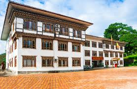
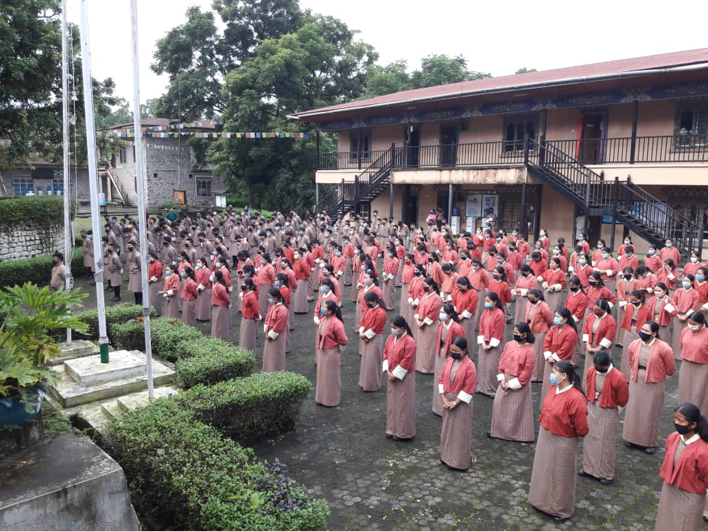

Education

Samtse Lower Secondary School
I began my early schooling here, where I built my foundational knowledge and developed important learning and social skills.

Samtse Higher Secondary School
After completing my lower secondary level, I continued my studies here, where I pursued both academic learning and personal growth through various activities and experiences.

Samtse College of Education
I am currently pursuing a Bachelor of Education in Secondary ICT here. As a third-year student, I am developing skills in teaching and technology to become an effective educator in the future.
Each stage of my education in Samtse has shaped who I am today and has motivated me to continue striving toward my goals and aspirations.